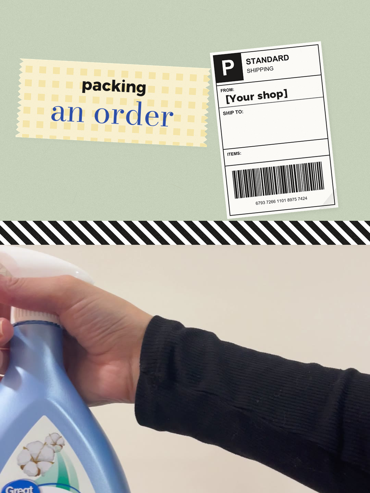
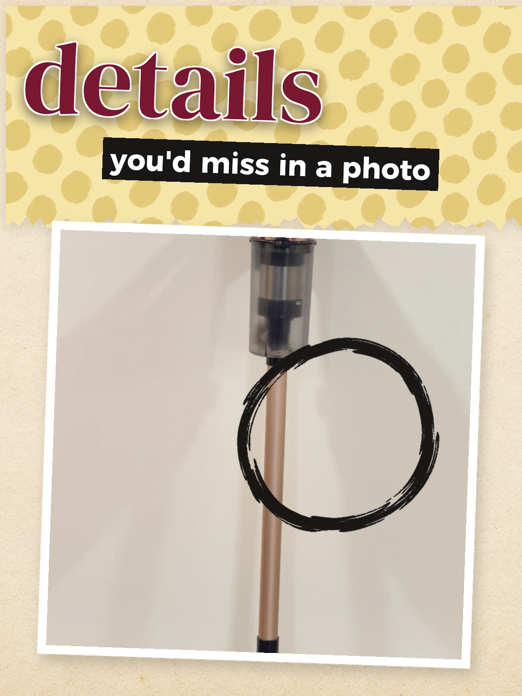
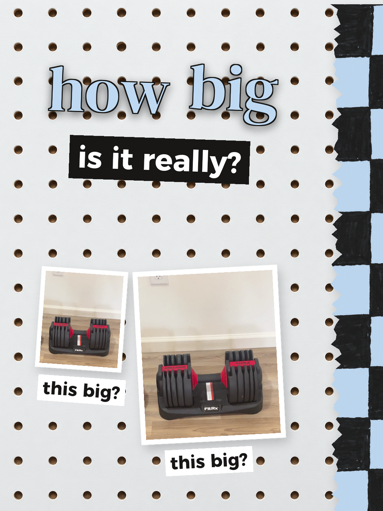
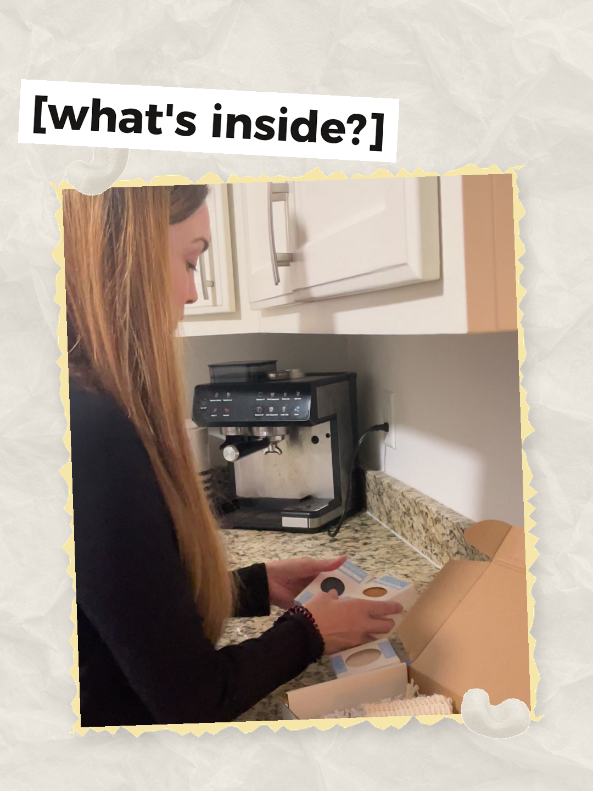

Ten clips to film in one afternoon. The same few shots turn up in Reel after Reel, so film them once and you have footage for weeks of posts.
tick each one off as you film it




| Film this | Use it for | |
|---|---|---|
| Your product on its own5 s
On a plain table in daylight. Hold the shot still, then do one slow push in. |
Almost every Reel: the opening, the ending, "check this before you buy" | |
| Your product in use3 clips, 4 s each
In a real room, used the way a customer uses it. Film three different moments. |
"One product, three ways", "a day with it", the end of any Reel | |
| In your hand3 s
Picked up and turned once, so people can judge the size. |
"How big is it?", answering a customer question | |
| Close-ups4 clips, 4 s each
Phone a hand's width away: the texture, the stitching, the label, the clasp. |
"The details", a new drop reveal, "what it feels like" | |
| Packing an order3 clips, 4 s each
Phone above the table: the product going in, the extras going in, the box closing. |
"Pack an order with me", "your order just arrived", small batch | |
| The unboxing7 s
Hands opening it from the customer's side. Get the lid off in the first 2 seconds. |
"Your order just arrived", gift Reels | |
| Making it3 stages, 4 s each
Raw materials, the middle, the finished piece. Same angle each time. |
"Start to finish", "everything that goes into one" | |
| Before and after2 clips, 5 s each
The problem your product fixes, then the same spot fixed. Keep the phone in one place. |
"Before and after", "the annoying moment", "mine vs the usual kind" | |
| You, talking to camera8 s
Phone at eye level, window in front of you. One sentence about who it's for. |
"Who it's for", the ending of a test or comparison | |
| Your shop, scrolling4 s
A screen recording of your shop page, scrolled slowly from the top. |
"Every option in 10 seconds", gift guides, any call to shop |
Put the clips in this order in any editing app, add the words, and post.
how big is it really? / this big / and it fits right here
the details you'd miss online / and all together
pack an order with me / the little extras / on its way to you
before / after / the thing that fixed it
Film upright Clean the lens Record every clip 2 seconds longer than its time Start right on the action
Which product are you filming, and where in your home is the best light?
Your first three Reels from this list:
These ten clips cover most of the 25 Reels in the Product Reel Template Pack, where each Reel's edit, graphics and cover are already done in CapCut: scrollyseo.com/product-reels